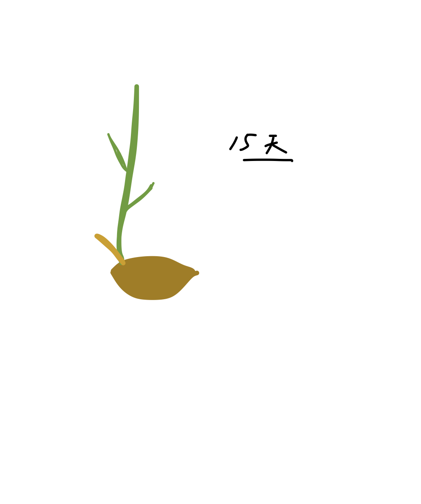
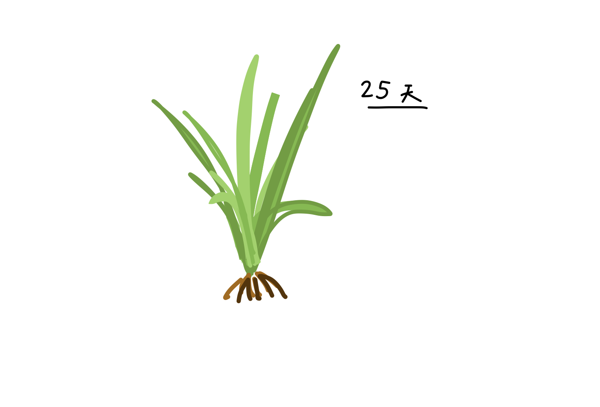
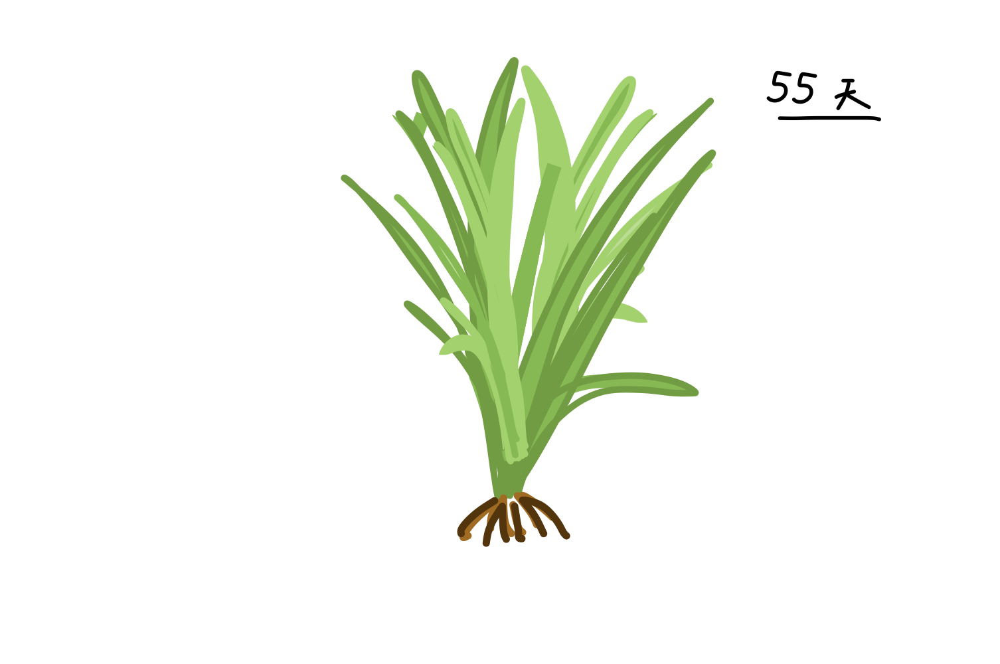
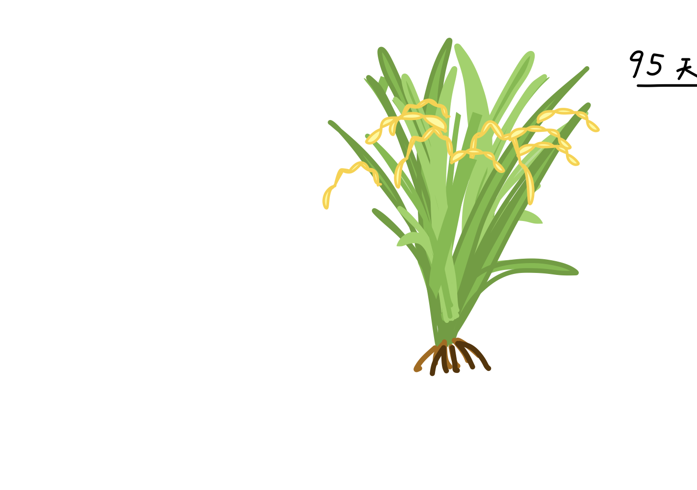

接下來要告訴你一段米的成長故事，每次出現不同圖片時把滑鼠的游標放在影片上就會出現神秘的文字，想要繼續看下去就要記得把滑鼠挪開喔!
米最喜歡在什麼樣的天氣之中長大呢？
擁有多年種植經驗的農夫們發現，住在臺灣的稻米最喜歡多雨又溫暖的季節，所以一年之中會有兩段時期適合稻米生長：第一次在2～6月左右，第二次在7～11月左右。
因此，每到2月時，稻田裡常常可以看見農夫新種下的稻米幼苗，直到6月就可以看到長得高大的稻米，準備讓人採收！到了7月，農夫又會趕緊種下新的幼苗，直到11月時採收之後，農夫就可以稍微休息，等到隔年的2月再開始種植新的稻米了。
擁有多年種植經驗的農夫們發現，住在臺灣的稻米最喜歡多雨又溫暖的季節，所以一年之中會有兩段時期適合稻米生長：第一次在2～6月左右，第二次在7～11月左右。
因此，每到2月時，稻田裡常常可以看見農夫新種下的稻米幼苗，直到6月就可以看到長得高大的稻米，準備讓人採收！到了7月，農夫又會趕緊種下新的幼苗，直到11月時採收之後，農夫就可以稍微休息，等到隔年的2月再開始種植新的稻米了。
 準備種稻米前，農夫們會先將小小的米種子泡在水裡，就像準備一個小小的床，讓米種子暫時睡在裡面。
準備種稻米前，農夫們會先將小小的米種子泡在水裡，就像準備一個小小的床，讓米種子暫時睡在裡面。

當米種子發芽後，農夫們就會開始整理要給稻米住的田，讓田充滿營養與水分，準備迎接米的到來。

米種子慢慢長大，成為比較高的「秧苗」之後，農夫們便會開始「插秧」，將秧苗移動到整理好的稻田中，正式讓米住在稻田裡面，照顧它長大。

在稻田中的米努力喝水、吸收陽光，農夫們也會不停地為它們除去蟲蟲、拔掉雜草、幫它們補充新鮮的水跟肥料，希望稻米能長得又高又壯。

長大後，每一株稻米會開起許多朵花，每一朵花又會變成「稻穀」，一連串的稻穀彎彎地垂在綠色的葉子旁。
 辛苦的農夫便將這些稻穀採收起來，一層層地將稻穀外面的衣服脫下。只脫去最外層衣服的稻米叫做「糙米」，再脫去一層衣服後便是「胚芽米」，如果又再脫掉一層衣服，便會成為我們常見到的「白米」。
辛苦的農夫便將這些稻穀採收起來，一層層地將稻穀外面的衣服脫下。只脫去最外層衣服的稻米叫做「糙米」，再脫去一層衣服後便是「胚芽米」，如果又再脫掉一層衣服，便會成為我們常見到的「白米」。